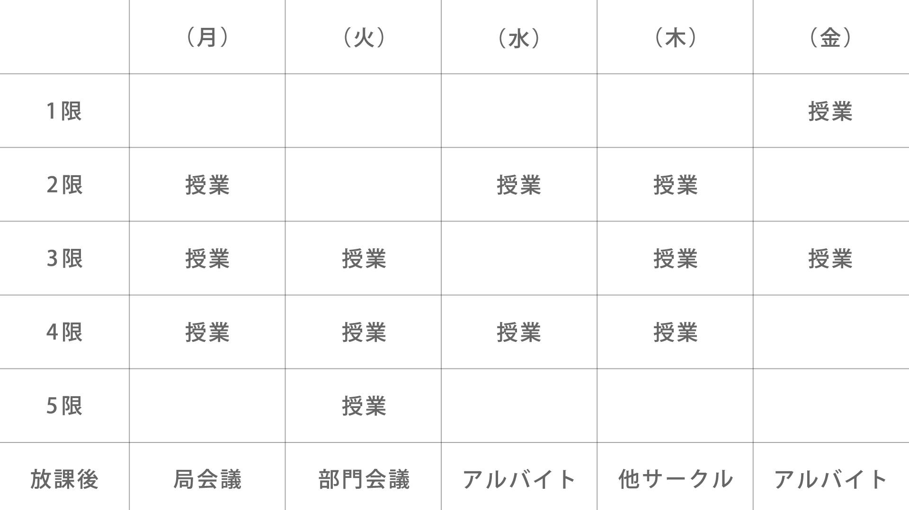
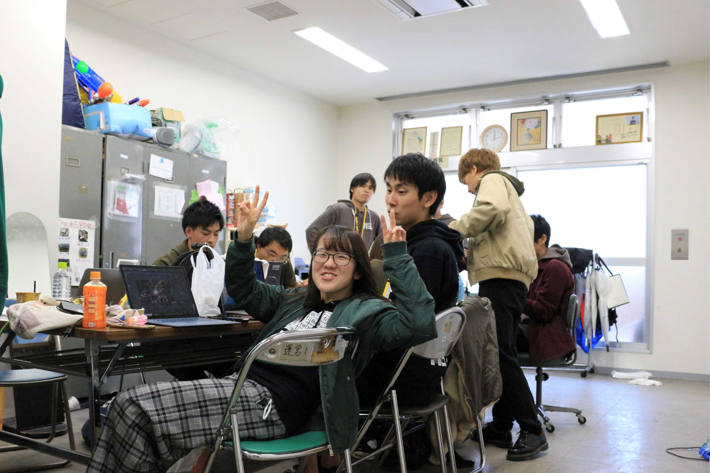

明大祭実行委員の日常
Aさんの日常
Aさんは国際日本学部の2年生で、制作局に所属しています。
このページではAさんの日常をもとに、明大祭実行委員がどのような日々を過ごしているのかをご紹介します！
Aさんの1週間
| ※ | 局によって会議の曜日が異なります。詳しくは「各局紹介」ページよりご覧ください。 |
| ※ | 会議の曜日は変更する可能性があります。 |
月曜日
19:00から部門会議があります。授業は4限で終わるため、5限の時間は部門会議の準備をしています。部門会議のあとはオンラインで部門のみんなとお話しています！
火曜日
5限まで授業があります。授業が終わったら習い事に向かいます。
水曜日
4限までみっちり授業です。授業が終わったらアルバイトに向かいます。明大祭実行委員はバイトも習い事も両立できます！
木曜日
週1回の局会議があります！局会議までの時間は余裕があるので、制作局のみんなとリモートで作業をしたり、ご飯を食べたりしています！
金曜日
授業が2限で終わるので、午後の丸々空いた時間はおうち時間に充てていて、制作活動をすることも。アルバイトもしています！
土曜日
基本的にはoffです！私は時間に余裕があったので、自宅で制作活動をすることが多いです！明大祭実行委員会室に顔を出すこともあります。
月に一回明大祭実行委員会全体で行われる総会があります。総会では他の局の人とも関わることができるので、友だちの輪が広がります！
日曜日
バイトに行ったり、レクに参加したりします！
私は中野キャンパスに通っていますが、和泉キャンパスで主に行われる活動にも支障なく参加できています！
明大祭実行委員会室について
明大祭実行委員会には、和泉キャンパス食堂3階のエレベーター前に明大祭実行委員会室という部室のようなものがあります。明大祭実行委員会室は自由部屋と仕事部屋に分かれていて、おしゃべりや授業課題などは自由部屋で、本格的な活動は仕事部屋で行われます。通称「実ボ」と呼ばれていて、実ボでは思い出がたくさんできます！
レクについて
明大祭実行委員会では夏頃に局ごとの合宿、冬頃に解散合宿を行います。また、各局・各部門ではテーマパークや花火、バーベキューなどをはじめとしたレクをたくさん行っています！中には富士登山を行った局もあるとか…
※新型ウイルス感染症流行中のため、現在はオンラインレクが中心です。時勢を見つつ対面でのレクを行っていきます！
※2019年度の様子です。 明大祭実行委員会では普段の活動やレクなどを通してかけがえのない仲間ができます。無理に友達を作ろうとしなくても自然と友だちが増えるはずです。あなたも明大祭実行委員会で大学生活を楽しみませんか？